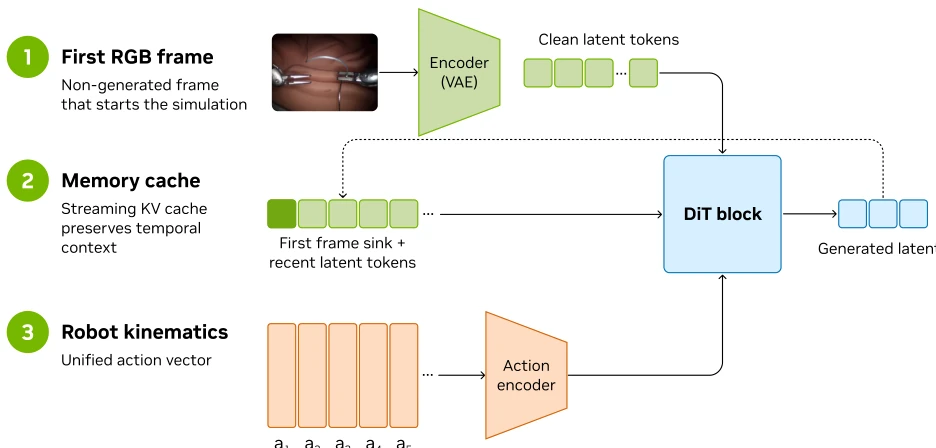
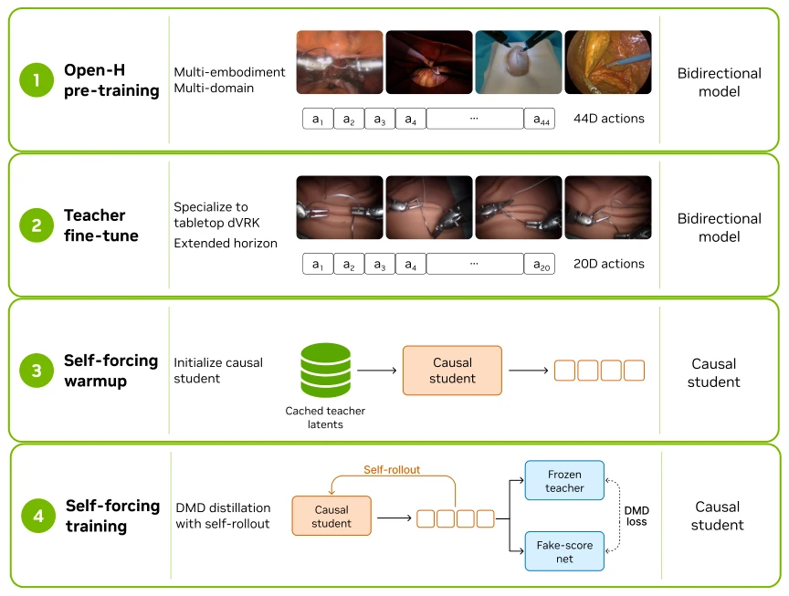
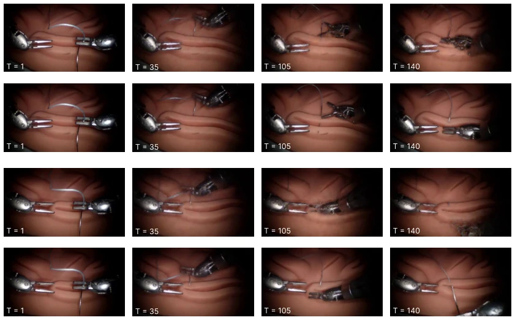
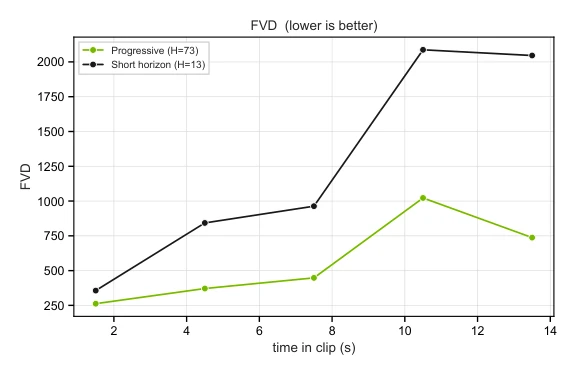
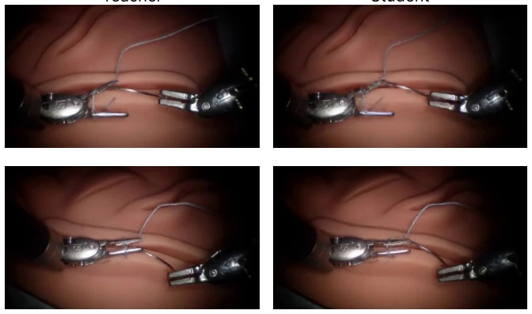

NVIDIA has brought the Cosmos model into the operating room this time, claiming 'real-time generative physics simulation'. Single-card inference at 160 FPS is indeed impressive; with the FlashDreams library, edge devices can also run it. However, the term 'physics' is somewhat of a stretch; upon close inspection of thread folds, the model begins to 'hallucinate', sutures perform magic tricks, and even under closed-loop control of knotting tasks, negative correlations emerge. Compared to traditional physics engines, it excels in realism but falls short in accuracy; compared to offline evaluation models, it excels in interaction but falls short in stability. As an open-source system, it provides new infrastructure for education, yet it remains distant from truly replacing physical training. This is not merely video generation, but rather a 'dream' of embodied intelligence, though the loose threads within the dream are prone to knotting.
研究动机Motivation
手术机器人训练依赖实体或尸体实验，成本高、风险大且难复现。传统仿真器（Zhang et al., 2019; Liang et al., 2024）难以捕捉软组织形变与真实视觉动态。虽已有世界模型（Zbinden et al., 2025）尝试离线评估，但缺乏实时交互能力。现有 WFMs 在视觉质量与生成速度间存在权衡（Chen et al., 2025），难以满足闭环控制需求。亟需一种既能保持高保真外观，又能实时响应动作、支持人类与策略闭环控制的交互式手术世界模型，以解决训练评估的瓶颈。
Surgical robot training relies on physical or cadaver experiments, characterized by high costs, significant risks, and difficulty in reproducibility. Traditional simulators (Zhang et al., 2019; Liang et al., 2024) struggle to capture soft tissue deformation and real visual dynamics. Although world models (Zbinden et al., 2025) have attempted offline evaluation, they lack real-time interaction capabilities. Existing WFMs involve a trade-off between visual quality and generation speed (Chen et al., 2025), making it difficult to meet closed-loop control requirements. There is an urgent need for an interactive surgical world model that maintains high-fidelity appearance while responding to actions in real-time and supporting human-strategy closed-loop control, to address the bottlenecks in training evaluation.
The system is divided into three stages: 1. Pre-training: Constructing a multi-embodiment foundation model based on Open-H-Embodiment (Cosmos-H-Surgical-Simulator). 2. Teacher Fine-tuning: Fine-tuning a bidirectional teacher on dVRK suture data, extending the temporal horizon to 73 frames to enhance long-term stability. 3. Student Distillation: Distilling the bidirectional teacher into a causal student using Self Forcing and DMD, supporting streaming inference. Architecturally, a unified 44D action space is adopted, retaining context through KV Cache. The inference end integrates the FlashDreams library, optimizing Tensor shapes and CUDA Graphs to achieve single-card real-time generation. Actions are injected via AdaLN, supporting multiple interfaces such as WebRTC/WebXR/robot console.

Figure 1: The model component of Cosmos-H-Dreams conditions next-frame surgical video generation on (i) the first RGB frame for the initial inference, (ii) a streaming KV-cache memory of recent history, and (iii) a chunk of robot actions in a unified action space. At each step the operator or policy supplies the next action chunk; the model synthesizes the next block of frames and returns them, closing the loop. VAE decoding and action injection have been omitted for clarity.

Figure 2: Cosmos-H-Dreams training pipeline. The bidirectional teacher learns action-conditioned surgical dynamics; the causal student is then distilled to run in real time with few-step diffusion and a streaming KV cache.
The dataset consists of dVRK desktop suturing (1 million frames). The baseline is Cosmos-Surg-dVRK. Metrics cover FVD, LPIPS, and Sim-to-Real strategy evaluation (Pearson r). Results: The 2-step student model achieves 161 FPS, with FVD 265.36. Sim-to-Real correlation is r=0.696, but the knotting task exhibits negative correlation (r=-0.39), indicating defects in fine structure generation. Ablation experiments show that while reducing diffusion steps improves speed, long-horizon teacher distillation can mitigate temporal drift. Overall, this demonstrates the feasibility of real-time interaction, though fine manipulation remains limited.

Figure 3: Frames sampled along long autoregressive rollouts of Cosmos-H-Dreams, comparing distillation with a short-horizon teacher (top) versus a progressive longer-horizon teacher (bottom).

Figure 4: Segmented FVD over contiguous 5-second windows along full autoregressive rollouts, comparing students trained with different-horizon teachers.

Figure 6: Generative errors due to complex fine structures. The distilled model (right) may hallucinate the geometry of the thread when it folds or crosses over itself, a failure mode far weaker in the teacher (left).